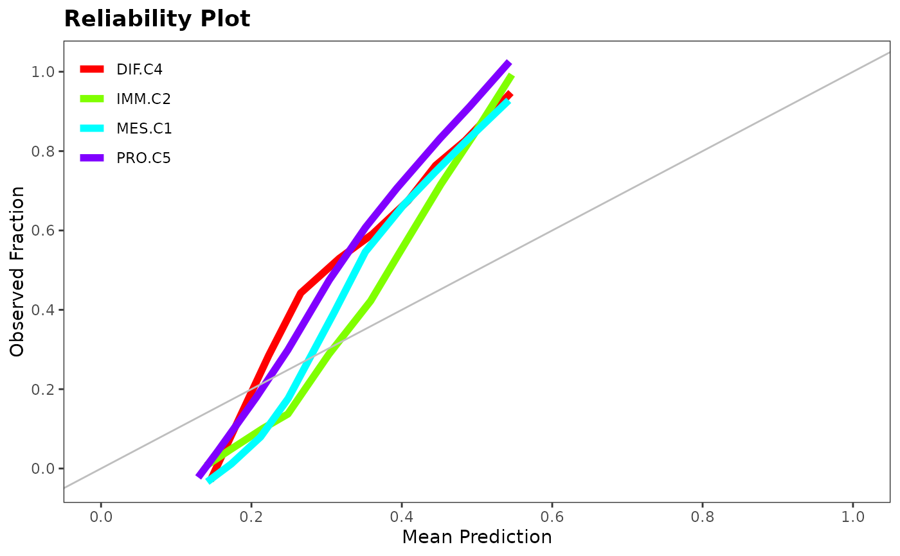
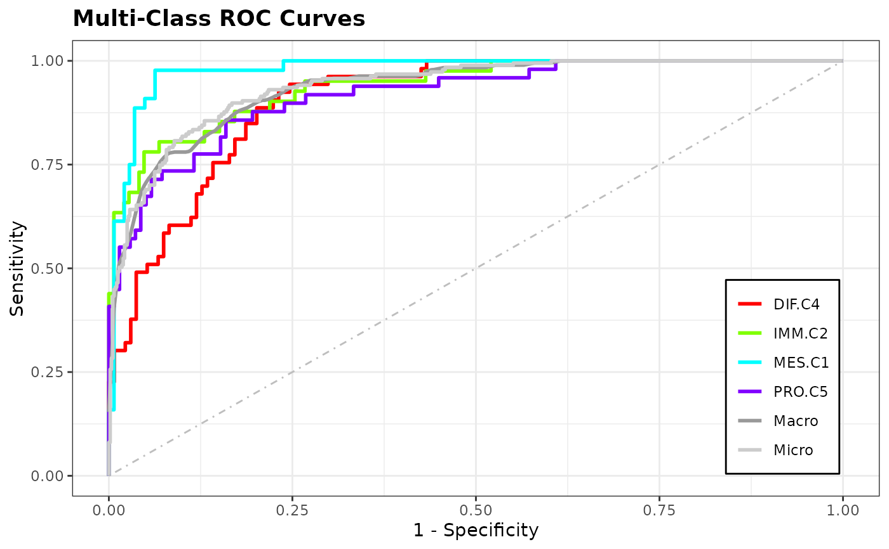
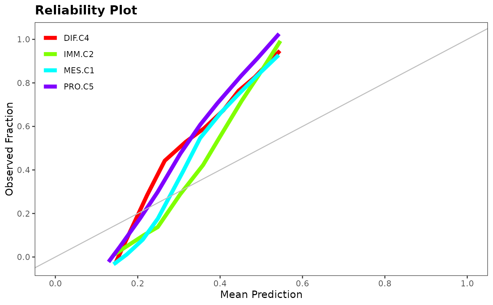
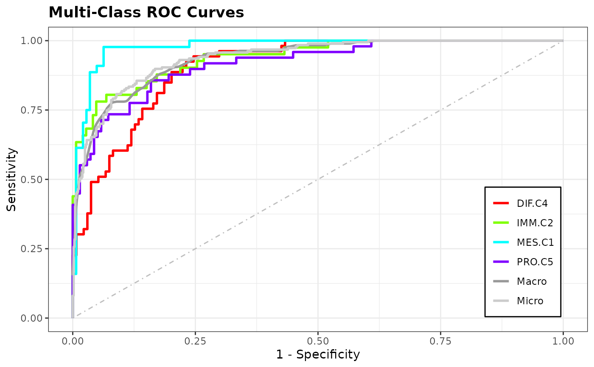

Graphs a discrimination_plot, reliability_plot, and roc_plot based on
true classes and predicted class probabilities.
discrimination_plot(x, probs)
reliability_plot(x, probs)
roc_plot(x, probs)Arguments
- x
true class labels
- probs
matrix of predicted class probabilities. Number of rows must equal length of
x
Value
ggplot objects for the desired plot
Details
A discrimination_plot shows boxplots of the predicted probabilities for
each class, separated by panels of the true class labels. The class
prevalence is also drawn as a horizontal line for each panel.
A reliability_plot shows mean prediction vs. observed fraction on lowess
smoother for each class. A line going thru the origin with slope of 1 serves
as a reference for perfect reliability.
A roc_plot shows the multi-class ROC curves for each class using
1-Specificity vs. Sensitivity.
All plots can be called from within evaluation().
References
http://onlinelibrary.wiley.com/doi/10.1002/sim.5321/abstract
Examples
data(hgsc)
class <- attr(hgsc, "class.true")
set.seed(1)
training.id <- sample(seq_along(class), replace = TRUE)
test.id <- which(!seq_along(class) %in% training.id)
mod <- classification(hgsc[training.id, ], class[training.id], "xgboost")
pred <- prediction(mod, hgsc, test.id, class = class)
discrimination_plot(class[test.id], attr(pred, "prob"))
 reliability_plot(class[test.id], attr(pred, "prob"))

roc_plot(class[test.id], attr(pred, "prob"))

reliability_plot(class[test.id], attr(pred, "prob"))

roc_plot(class[test.id], attr(pred, "prob"))
